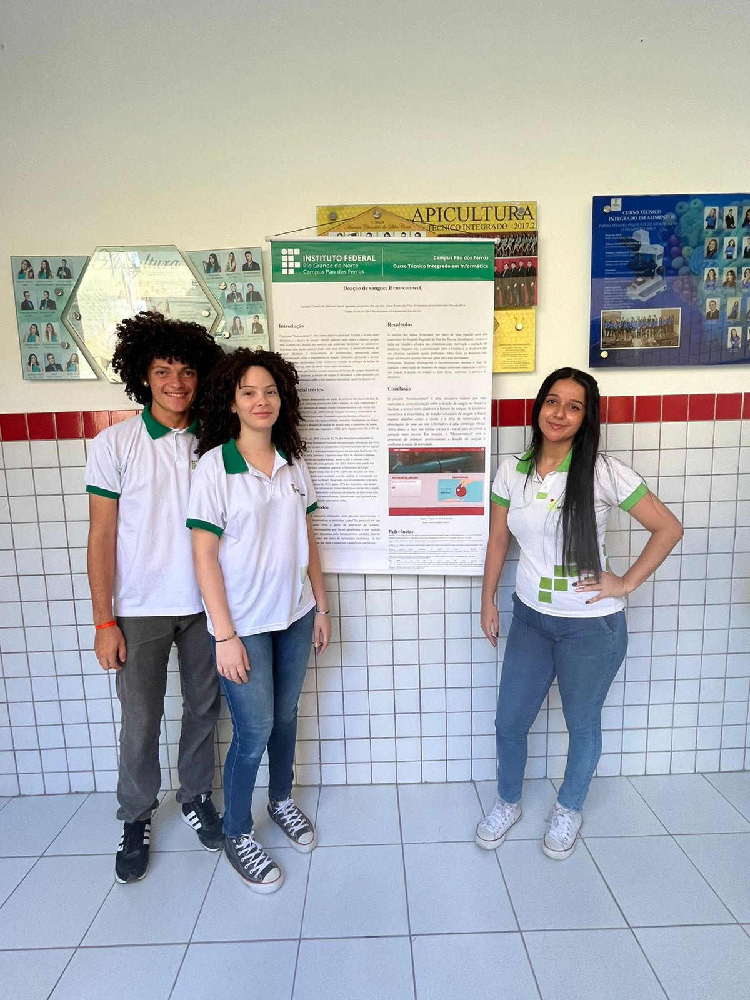
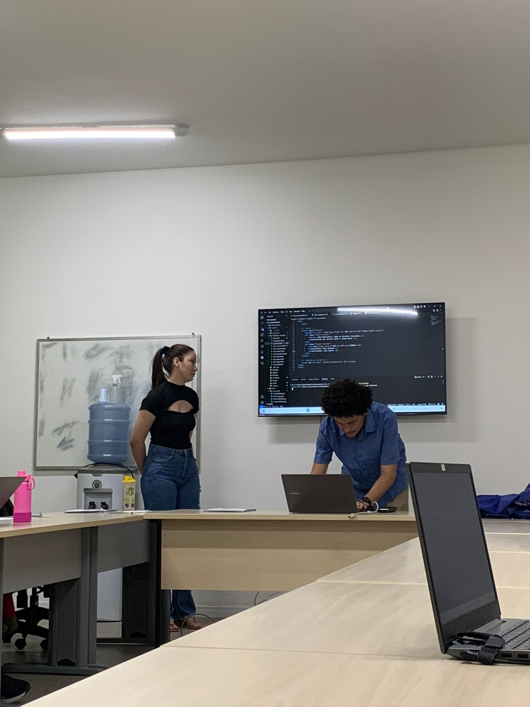
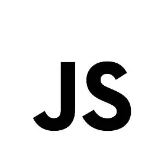

Sou técnico em Informática formado pelo IFRN, Campus Pau dos Ferros (RN), onde atualmente também curso Análise e Desenvolvimento de Sistemas. Desde cedo me interessei por entender como as tecnologias funcionam por trás das telas, e hoje aplico esse interesse na área da programação, desenvolvendo soluções web práticas, modernas e eficientes.
Atualmente me dedico a aprender e praticar com projetos pessoais e acadêmicos, utilizando ferramentas como Django, Python e JavaScript. Tenho paixão por resolver problemas, melhorar processos e criar interfaces funcionais e intuitivas. Estou em constante evolução, buscando conhecimento, colaboração e crescimento profissional.



Pythondj
Djangodj
Rest

JavaScriptAo longo da minha formação técnica e acadêmica, participei de diversos projetos que fortaleceram minhas habilidades em programação e desenvolvimento web. Um dos principais destaques é meu Trabalho de Conclusão de Curso (TCC), onde desenvolvi um sistema completo voltado à otimização do processo de doação de sangue, com foco em melhorar o gerenciamento, agilizar atendimentos e facilitar a comunicação entre doadores e hemocentros.
Paralelamente aos estudos formais, busquei aprimoramento contínuo por conta própria. Realizei o curso de Python do professor Gustavo Guanabara, através do canal Curso em Vídeo, onde aprofundei meus conhecimentos em lógica de programação e estruturação de código limpo e eficiente. Também estudo por meio de vídeos, tutoriais e documentações técnicas no YouTube e outras plataformas.
Me destaco na organização de código, clareza lógica, aprendizado rápido e dedicação. Tenho afinidade com frameworks como Django e Django REST Framework, além de boa base em HTML, CSS e JavaScript. Gosto de transformar ideias em projetos reais e funcionais, com código bem pensado e soluções práticas.